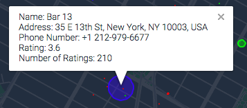

The Populartimes: Manhattan is a visualization of customer traffic within various establishments throughout lower/middle Manhattan during various times of the day and days of the week.
Click the info button to find out more!
Note: For the best experience, use a low resource intensive browser (i.e. Safari, Edge (not Chrome!)). Continuous rendering is not recommended for mobile devices.
×
Each dot on the map represents a different establishment type (i.e. resturants, bars, nightclubs, cafes, gyms). Using data from Google's Places API, we can observe how customer traffic at an establishment changes over time.
restaurants (red dots)
bars (green dots)
nightclubs (blue dots)
cafes (orange dots)
gyms (purple dots)
The size of a dot will change depending on how busy the establishment is at the specified time and date. We determine how busy an instiution is by using the Populartimes API.
It should be noted that the size of each dot is relative to the establishment size meaning a small 10 person restaurant at full capcity will render a large dot even though their are not a large amount of people present.

The dots are also selectable so that you may identify the establishment.